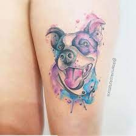
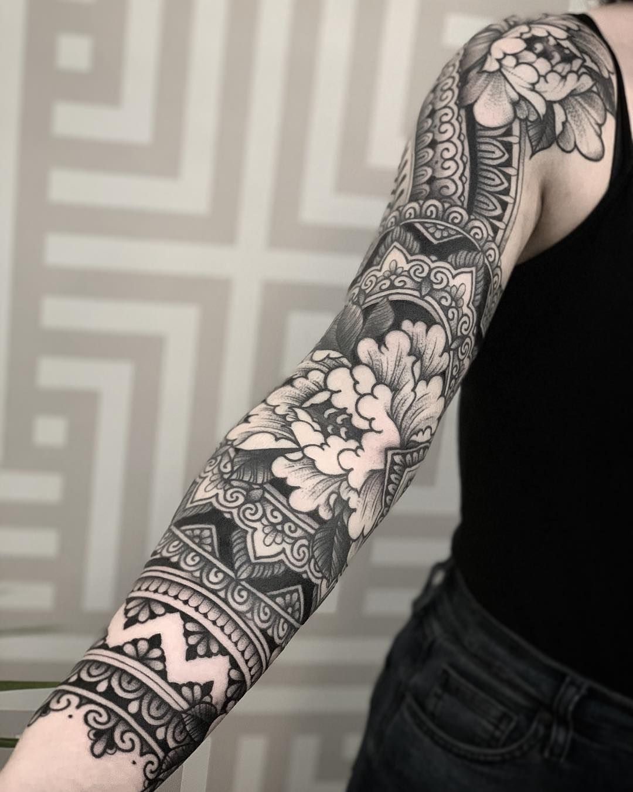

¿Que es Inkfograph?
Inkfograph , es un sitio web dedicado exclusivamente , a una de las areas artisticas , mas antiguas de la historia , el tatuaje , con datos que revelan su existencia , hasta mas 5.000 años antes. Siendo este un arte tan rico en historia , como variedad , es nuestro deber desde parte de Inkfograph , hacer un recorrido por el mismo.
¿ Sabias que existen alrededor de 12 estilos de tatuaje en la actualidad?

ACUARELA

BLACK ADN GREY
GOTICO.

ORNAMENTAL
¿Para mas información sobre los diferentes estilos del Tattoo? Haz click en Galeria